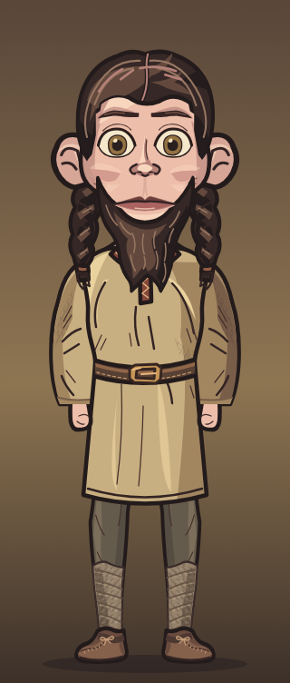
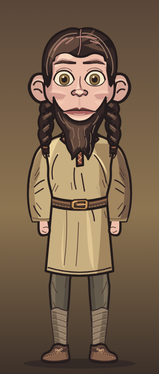
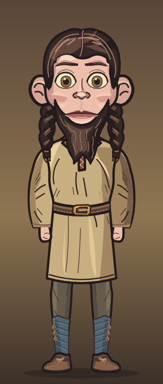

<!doctype html><html lang="ru"><meta charset="utf-8"><meta name="viewport" content="width=device-width,initial-scale=1"><title>Обмотки · материал</title><style>body{font:16px system-ui;background:#25201b;color:#eee2cd;margin:0 auto;max-width:1280px;padding:1rem}
    a{color:#f4ca91}h1,h2{font:700 1.7rem Georgia,serif}nav ul{columns:3}.grid{display:grid;gap:1rem;
    grid-template-columns:repeat(auto-fit,minmax(230px,1fr))}article{min-width:0;border:1px solid #655343;
    background:#312821;padding:.6rem;border-radius:5px}a img{vertical-align:middle}img{max-width:100%;height:auto}
    .character{display:block;max-height:460px;width:auto;margin:auto}.card{width:32px;height:32px}
    .detail{display:block;width:100%;margin:.35rem 0}.compare{display:flex;align-items:flex-start;gap:.5rem}
    .compare a{flex:1;min-width:0}small{color:#dccab0}code{overflow-wrap:anywhere}@media(max-width:730px){nav ul{columns:1}}</style><main><nav><a href="index.html">Все разделы</a></nav><h1>Обмотки · материал</h1><div class="grid"><article id="material__leg_wraps_material__wool__wool"><h3>Шерсть</h3><code>wool</code><a href="images/245ecc06de7758f1602090771008e56f5a4cf229b1b415df316d89ca7114d72c.png"></a><p><a href="images/6ccb04c692ea3861cf260a65df94e372e873794d5a984d9bd6bd197dc4dc6c60.png"></a> <small>32 × 32</small></p><details><summary>До и после</summary><div class="compare"><span>До<a href="images/22f505f301f3a5dde948c5303cf094b0ece2b863d6d4c05370715093c6a290ed.png"></a></span><span>После<a href="images/245ecc06de7758f1602090771008e56f5a4cf229b1b415df316d89ca7114d72c.png"></a></span></div></details></article>
<article id="material__leg_wraps_material__wool__coarse_wool"><h3>Грубая шерсть</h3><code>coarse_wool</code><a href="images/2f95159dc55f25c6e4f6d3ce1a4217037840f3bd0db3ae6312e4ebdcca0b9abf.png"></a><p><a href="images/6ccb04c692ea3861cf260a65df94e372e873794d5a984d9bd6bd197dc4dc6c60.png"></a> <small>32 × 32</small></p><details><summary>До и после</summary><div class="compare"><span>До<a href="images/8912abf50e596ad08d4786126d784b2df46be4777b1f2dc8446c0d522bba3cbf.png"></a></span><span>После<a href="images/2f95159dc55f25c6e4f6d3ce1a4217037840f3bd0db3ae6312e4ebdcca0b9abf.png"></a></span></div></details></article>
<article id="material__leg_wraps_material__wool__fine_wool"><h3>Тонкая шерсть</h3><code>fine_wool</code><a href="images/6e4f552180422cbb465e130f96dfa341d1a68242e7665eb864f2ebeb51b3e596.png"></a><p><a href="images/6ccb04c692ea3861cf260a65df94e372e873794d5a984d9bd6bd197dc4dc6c60.png"></a> <small>32 × 32</small></p><details><summary>До и после</summary><div class="compare"><span>До<a href="images/6b3c989944aa355faadaed82f898a7db28dbff44ad07c09d1ec8aa19b5a7689a.png"></a></span><span>После<a href="images/6e4f552180422cbb465e130f96dfa341d1a68242e7665eb864f2ebeb51b3e596.png"></a></span></div></details></article>
<article id="material__leg_wraps_material__siksala__wool"><h3>Шерсть</h3><code>wool</code><a href="images/bdd05fba96138158d927abb34e2920ebe21db42c8059bbf052348ed712654339.png"></a><p><a href="images/6ccb04c692ea3861cf260a65df94e372e873794d5a984d9bd6bd197dc4dc6c60.png"></a> <small>32 × 32</small></p><details><summary>До и после</summary><div class="compare"><span>До<a href="images/4716136eacbec38f9610f752fdbb34190078df38602a9e3b58129919f72c6872.png"></a></span><span>После<a href="images/bdd05fba96138158d927abb34e2920ebe21db42c8059bbf052348ed712654339.png"></a></span></div></details></article>
<article id="material__leg_wraps_material__image_leather_footrags__leather"><h3>Выделанная кожа</h3><code>leather</code><a href="images/fb0a9e637901fd6a2333f37ff073ccc13f1a0c6426f4dfd06ea4dbc098a18172.png"></a><p><a href="images/6ccb04c692ea3861cf260a65df94e372e873794d5a984d9bd6bd197dc4dc6c60.png"></a> <small>32 × 32</small></p><details><summary>До и после</summary><div class="compare"><span>До<a href="images/bfac572f32ffff75a28371a9d8d2f470d07e9bb9febe035cdbfe1f064a5a0d8f.png"></a></span><span>После<a href="images/fb0a9e637901fd6a2333f37ff073ccc13f1a0c6426f4dfd06ea4dbc098a18172.png"></a></span></div></details></article>
<article id="material__leg_wraps_material__auto"><h3>По фасону</h3><code>auto</code><a href="images/577d78d8585065db9cbca3b477ceade5035e2066d3fcbdbb56961e3b0a08c2a7.png"></a><p><a href="images/6ccb04c692ea3861cf260a65df94e372e873794d5a984d9bd6bd197dc4dc6c60.png"></a> <small>32 × 32</small></p></article></div></main></html>
